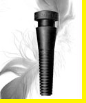
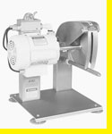

Fingers
- Made In USA
- USDA Approved
- Made To Order
- Assured Freshness
- Sealed In Plastic Bags to Assure Freshness
- Custom Hardness and Durometers Available
products
Sales
Dolly Tomlinson
For personal attention to your needs, US and Canada
1-800-521-4886.
See Our Ad In
US Poultry Magazine
For over 50 years, Kent Company has produced the highest quality rubber Picking
Fingers on the market.
Factory
Edd Woike
Technical questions about Kent Picking Fingers 1-773-536-6350
Kent Fingers are fabricated in Chicago and shipped directly from Calumet Rubber Co., for over three generations since 1944.